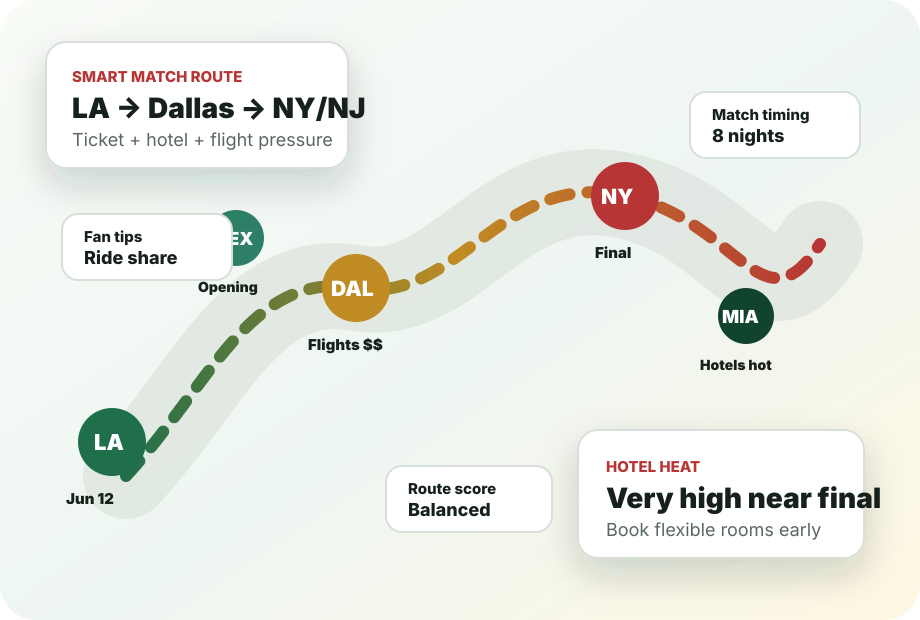

Route planner hub
World Cup 2026 route planner: choose your itinerary before booking
The smartest World Cup trip is not the trip with the most cities. It is the route that protects your match days, hotel check-ins, airport buffers and recovery time.
Start here: pick your route style
| Route style | Best for | Use this plan |
|---|---|---|
| One-city anchor | First-time fans with one confirmed match | 7 day itinerary |
| Two-city regional route | Fans with two likely matches | 10 day itinerary |
| Team-following route | Fans waiting on draw and knockout path | 2 week itinerary |
| Driveable cluster | Fans avoiding extra flights | Road trip route |
Best route clusters to compare
| Cluster | Core cities | Main risk |
|---|---|---|
| Northeast | Boston, New York New Jersey, Philadelphia | Final-week hotel prices and stadium transfers. |
| Texas | Dallas, Houston | Heat, long drives and late-night returns. |
| West Coast | Los Angeles, Bay Area, Seattle, Vancouver | Flight timing and border rules if Canada is added. |
| Mexico-first | Mexico City, Guadalajara, Monterrey | Adding a U.S. leg too tightly after opening week. |
Decision rule
If a route needs a same-day flight before a must-see match, it is not a strong World Cup route. If a route lets you arrive the day before, test the stadium path, and sleep in the same hotel after the match, it is usually stronger than a more exciting-looking map.
Route planner checklist
- Pick one anchor match or host city first.
- Choose a regional cluster before booking flights.
- Keep one buffer day before important matches.
- Check hotel area, not only hotel price.
- Use refundable bookings where ticket status is uncertain.
- For Canada or Mexico legs, check documents and rental-car rules before the route depends on a border crossing.